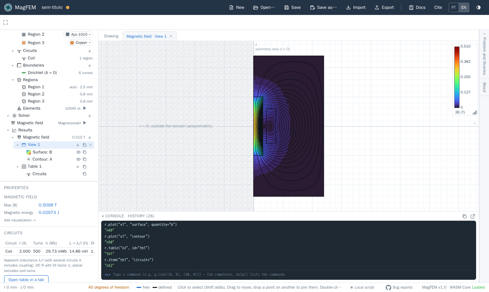
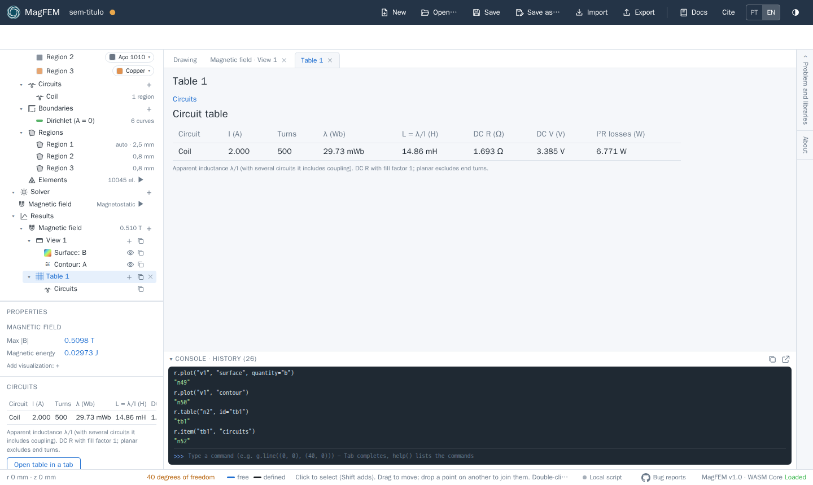

Results
After solving, the physics shows up under Results with the peak |B|. Its + creates views, plots and tables;
each one opens as a tab in the canvas (the Drawing tab stays there).
Field views
Item |
What it shows |
|---|---|
Field map |
colored surface ( |
Interpolated map |
an empty view with high-order interpolation and subdivision (smooth contours): add layers with the view’s |
Plot over line |
a quantity along a curve of the drawing (B, Bn, Bt, H, A…) |
A view has layers (surface, contour, glyphs) that can be hidden, duplicated and dragged in the tree to another view. In the layer properties: quantity, value range, number of lines, colormap, color and arrow spacing.
Click the legend to change its limits; drag it to move it and use the corner handle to resize it.
Export (top bar) writes a PNG or JPG of the view.

Tables and result variables
A Table collects items, and each item produces named result variables that scripts can read
(r.result("name")).
Item |
Results |
|---|---|
Circuits |
current, turns, flux linkage λ, L = λ/I, DC R, DC V and I²R losses of each circuit |
Surface integral |
over the chosen regions: area, volume, ∫A, current, energy, mean B, losses (Joule and iron), force Fx, Fy and torque |
Line integral |
along a curve: length, flux Φ, magnetomotive force ∫H·dl, ∫B, mean B, force and torque (closed contour) |
Formula |
an expression of the other variables (for example |
Time plot |
transient: the variables you choose, by name (with autocomplete) or as an expression of them, |
In harmonic (AC) analysis, circuits with a wire set get the AC R and the skin and proximity losses
(variables <circuit>_Rac, _Pskin and _Pprox). Skin uses the wire’s \(R_{ac}/R_{dc}\) factor (Bessel for round,
Dowell for rectangular); proximity adds up, in each coil element, the loss of the strands it holds under the local
\(\hat B\) of the field. The eddy currents in the strands do not change the field (good for wire that is thin compared
with \(\delta\)).
Each output has an editable name (by default the item prefix plus the quantity, such as S1_fx). Circuit variables
are named <circuit>_I, <circuit>_lambda, <circuit>_L and <circuit>_R.

Force and torque
Force is computed with the Maxwell stress tensor, in two ways:
Surface integral (recommended): select the regions of the body. It uses the weighted tensor, like the FEMM block integral, and only the air elements around the body contribute. It is the most accurate.
Line integral: a closed contour in the air around the body.
Torque is about the origin. In planar problems the values already include the depth.
Transient and AC
In transient analysis, the Circuits item becomes curves over time for each circuit: current \(i\), flux linkage \(\lambda\), \(L = \lambda/i\) (instants with \(i = 0\) are left out of the plot), terminal voltage \(v = R\,i + d\lambda/dt\) and losses \(R\,i^2\).
In transient and AC analysis, the view bar has a time bar, ▶ to animate, frames per second and Export animation (WebM). Table items become curves over time; in the item properties you can see the table at a chosen instant. The signals of an external circuit show up when you click a component.
Export
The Export button on the top bar exports the active tab: a field view as PNG or JPG, a plot over a line as SVG, PNG, JPG or CSV, and the circuit table as CSV. The Time plot has its own CSV, SVG and PNG buttons. The animation (WebM) comes from the view bar. See Files, import and export.